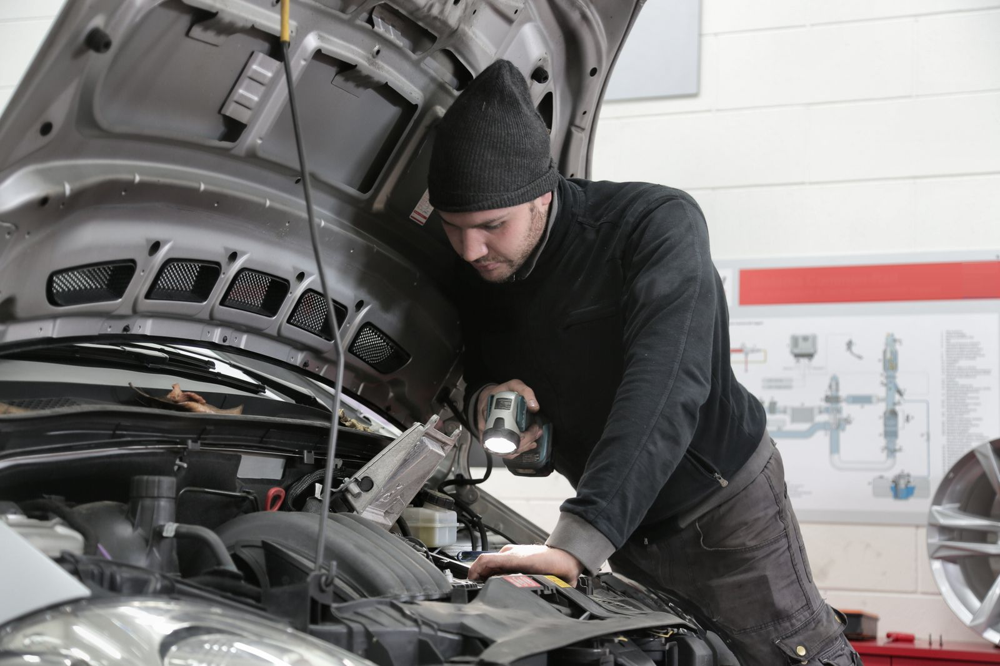

01 / СЕРВИС
Диагностика электронных систем
Выберите направление диагностики в заявке.
Выберите работу, укажите автомобиль и удобное время. Заявка соберётся автоматически — без длинной анкеты и обязательного email.
Демо: данные не отправляются. Время подтвердит администратор.

Автомобиль → работа → контакт
Время приезда согласует администратор
Ориентир — трамвайное кольцо
Выберите услугу — она автоматически появится в заявке. Стоимость уточняется, без неподтверждённых сумм.
Выберите направление диагностики в заявке.
Замена масел и технических жидкостей, ремня ГРМ.
Диагностика и ремонт подвески, проточка тормозных дисков.
Компьютерная регулировка развал-схождения.
Работы с колёсами — по предварительному согласованию.
Обслуживание кондиционеров и аппаратная промывка печки.
Вместо большой анкеты — короткий запрос с нужными деталями. В этой версии демонстрируем автоматическую сборку заявки для администратора.
Условия и доступность услуг подтверждает сервис. Здесь — только сведения из открытых источников.
В форме вы указываете желаемые дату и время. Это не свободный слот: администратор должен подтвердить визит.
В предоставленных источниках цены не подтверждены. Стоимость уточняется после согласования работ; суммы в демо не придуманы.
По данным официального сайта, сервис обслуживает легковые автомобили любых марок. На сайте также указаны специализации Subaru и BMW.
Для автомойки опубликован отдельный номер: +7 (3822) 463-900. График и стоимость уточняются по телефону.
Без регистрации и email. Достаточно знать, что нужно автомобилю. Если сомневаетесь — выберите помощь с подбором работ.
На официальном сайте указаны разные часы. Пожалуйста, уточните график по телефону.